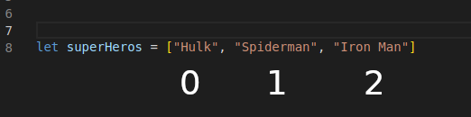

Technical Blog - Javascript DOM
JavaScript and its relationship to HTML and CSS.
What we see on a website compiles of HTML, CSS and Javascript. Imagine you're
building a house. When you build a house you need have a foundation, then frames
and put the frames up etc. building this house is like HTML, it is the
structure of a webpage.
Part of this house, you'll need to make it look good. So you start to add paint,
wall paper, roof, and any kind of decoration to your house. CSS is very similar,
it allows you to style your page with colours, shapes and size to your liking.
When you begin to add , bathrooms, heat pumps, oven, plumbing, electrical, and
broadband into your home, you can change the type of bathroom, oven etc
by calling someone to make these changes. Javascript allows your website to be
more interactive and the ability to make changes to your HTML and CSS by accessing
the DOM and the ability to call open different functionalities just like you would
for calling a tradesman for your house.
Control flow and loops
The control flow is the document flow of your code and reading Javascript is
usually from top to bottom, just like you would in a book until stated
otherwise in the code. I will use the a daily life analogy to give you a
fair understand of how control flow and loops work in Javascript.
Lets say your week is like a code document. If you're working 5 days a week
and start work at 8.30am and finish at 5pm this is what it would look like
give or take:
You wake up
Freshen up
Eat breakfast
Walk the dog
If Monday to Friday add these to following things to do :
Get ready for work, drive to work, drive the same route, work, have lunch, work until 5pm, drive back home.
If sick on any of these days do this:
Go to doctors if you're not faking it,
Lie in bed,
Watch Netflix and superhero shows
Otherwise carry on to the next part.
If Saturday or Sunday add these to following things to do:
Sleep in
Watch Netflix
Hang out with friends
go to town
play music
Play games
go to restaurant
or become a superhero
As you can see from the above analogy, our lives can be interpreted as code control
flow and loops until there are other decisions to be made then the flow changes
depending on the what is happening.
What is DOM and how you might interact with it
What we see on a website compiles of HTML, CSS and Javascript. Each of these
have their own roles to play. As mentioned earlier in this article, HTML is
the structure of the website, CSS styles the website and makes everything
look smoking hot and Javascript is the interaction of the website and can
manipulate HTML elements and styles of css simply by using the DOM.
They all work together, you can use the Javascript DOM to play the elements
on the page, do things with mouse clicks and keyboard press, control of
animations, interact with your devices like webcam and microphones and a
whole lot more.
Array and objects
Arrays and objects are often used to collect and store data. You can also
access them from API's but in this article we wont get into that.
Arrays are a list of data that are stored within a variable name and the list
of data within the array is stored as a string inside a square bracket like
this ["person"]. You can have as many items inside the array as you want and
to access them you use the square backets and the index number of where the
array is positioned. In Arrays we count the first item as 0,
second 1, third
2 and so on like the image below.

Objects are also stored inside a variable and are list of data which stores
key and values and they use curly backets { }. The key and values are
written as heroName: "SpiderMan" , realName: "Peter Parker". To access
them you would need to use the dot notation. So if the object name is
superHero and I have the name stored inside the object. This is how I
would access the super hero's real name superHero.realName. The return
would be "Peter Parker".
Functions and why they're helpful
functions callMySuperhero() {
return "I Love " + superHero.realName;
}
Functions are a block of code where you can use multiple times within
your program simply by calling the function name and parenthesis ( ) .
It is very useful because you don't want to repeat big block of code that
takes a long time to write, instead of copying 20 lines of code into 5 different
areas, you can simply just call the function each time with just a simple function
and ( ) like this
callMySuperhero()
- back to top